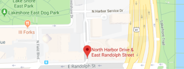

Washington/State
Suggested Routes
-
60
- Eastbound
- Randolph/Harbor Dr
- Next Bus: 2min
- Every 20min
-
124
- Eastbound
- Navy Pier
- Next Bus: 5min
- Every 10min
-
151
- Northbound
- Devon/Clark
- Next Bus: 7min
- Every 16min
-
J14
- Southbound
- 103rd/Stony Island
- Next Bus: 3min
- Every 15min
-
124
- Southbound
- Navy Pier
- Next Bus: 9min
- Every 10min
-
6X
- Reroute
- Jackson Park Express
- N/A
-
4
- Out of service
- Cottage Grove
- Resumes 12:10am
-
20
- Out of service
- Madison
- Resumes 12:10am
-
157
- Out of service
- Streeterville/Taylor
- Resumes 6:00am